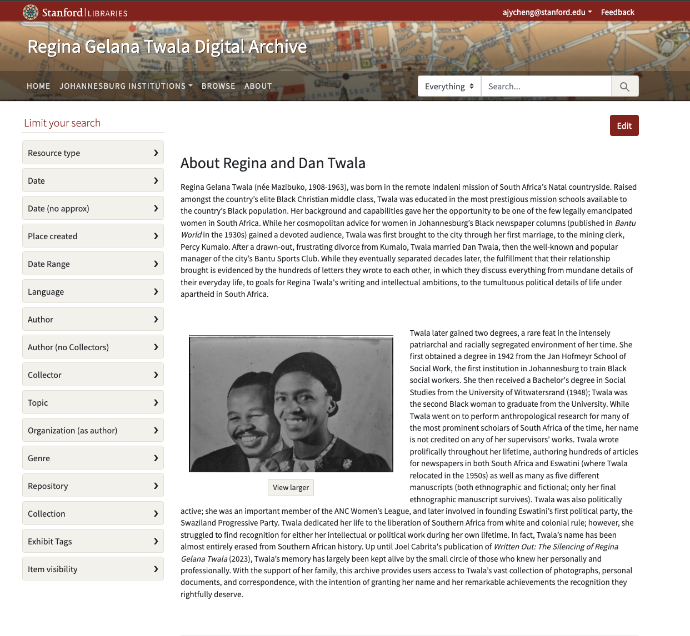

Summer 2024
Visible Bodies
Project Lead: Joel Cabrita
The Visible Bodies Project aims to make accessible the personal archives of Regina Gelana Twala. Regina was a remarkable 20th century Black South African intellectual and activist. She was one of the first African women to gain a degree in social work at the Jan Hofmeyr School, and a bachelor’s degree in Social Studies at the University of the Witswaterstrand. She also was a talented writer and researcher - she wrote as many as five manuscripts and served as research assistant to prominent white scholars of African history. Regina also became the first African woman to run for a political office in her adopted homeland of Eswatini. Regina Twala strove to become a published writer, accomplished researcher, and revolutionary politician. However, the heavily patriarchal forces she encountered in both white and Black South African intellectual and political circles have, until now, erased her name from the margins of history, and barred her from the credit she deserves. With the generous permission of Regina’s granddaughter Pinokie, we are working with Stanford Libraries to create an online Spotlight exhibition that aims to provide digital access to Regina’s vast collection of letters and memorabilia that provide a window into her life.
Project Members
Project Team
Joel Cabrita
Professor of History and African and African American Studies
Amanda Cheng
Undergraduate Researcher - Summer, 2024
Delaney Swinton
Undergraduate Researcher - Summer, 2024
Beginning the Project
The start of this summer began with the completion of metadata. Regina’s archive contains about 1200 files. Emily Huang, the project’s previous CESTA intern, had already generated metadata for the majority of these files, and so Amanda and I were only left with the last few hundred. Later in the project, when we needed to find a specific letter to draw information from, having an intimate understanding of the categorization of source IDs and metadata based on file attributes would prove extremely helpful.

After we submitted all of the metadata for accessioning at Stanford Libraries, the next step lay in creating the Spotlight exhibit itself. We began with the text, word-searching through all of Regina’s letters for references to specific Black Johannesburg institutions of her time - the Bantu Men’s Social Center, the Bantu Sports Club, Jan Hofmeyr School for Social Work, among others. We made note of every relevant letters’ source ID according to the subject, so that I could organize these primary sources for archival view in the Spotlight. We then crafted relevant explanatory paragraphs for the exhibit portion of the site, drawing from Regina’ archive and outside secondary sources to paint a fuller picture of these seminal institutions.
Creating the Spotlight
Once we had drafted the preliminary text of the exhibit, I began to fine-tune our content and implement visual features into the Spotlight (at this point, Delaney had transferred projects). I culled through the photographs in Regina’s archive, searching for photos of the institutions that the site details. Additionally, I geographically centered the site by mapping these institutions onto a 1951 tourist map of Johannesburg, so that viewers could gain a sense of the extremely close proximity within which these institutions existed.

Once the metadata was accessioned, I was able to draw from my previous categorization of the archive to allow viewers to see all the original letters relating to the relevant exhibit information. All of these features aim to make the Spotlight exhibit more multifaceted and more engaging for viewers.

Some of the most salient skills I’ve learned from this project are various methods of displaying information to create a particular curated experience. In order to meld the vast archive with the front-facing text, I incorporated particularly relevant photos and quotations as elements of the exhibit. In addition, I geographically centered the various location-based pages through a reproduced map of Johannesburg. I anticipate that these skills will prove extremely helpful in future research that I will engage in, and also in the development of my own personal projects.